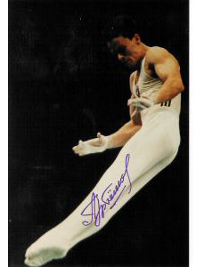

Vladimir Artemov (USSR)
1988 Olympic AA Champion
|

Medal Total
- Olympic Games: 4 Gold, 1
Silver
- World Championships: 6
Gold, 4 Silver, 2 Bronze
- World Cup: 1 Bronze
|
Vladimir was born in the city of
Vladimir on December 7, 1964. He was coached by Viktor Firsov at
Burevestnik. Now living in the USA with his American wife and 2 sons,
Vladimir calls San Antonio, TX, home.
Competition Results
- 1977
- Jr. USSR Championships: 4th AA
-
- 1981
- All-Union Specialized Sports Schools
Championships: 1st AA
Dinamo Spartakiade: 3rd AA
- Jr. Friendship Tournament (Druzhba): 2nd AA
-
- 1982
- Champions All: 4th AA
- Jr. European Championships: 2nd AA, 2nd PH, 2nd RG,
2nd PB
- Moscow News: 5th AA
Nebraska-Japan-Burevestnik Collegiate Meet: 6th AA
- Penn State-Burevestnik: 2nd AA
- Temple University-Burevestnik: 2nd AA
- USA-USSR Dual Meet: 2nd Team, 7th AA
- USGF International Invitational: 4th PH, 2nd RG
- USSR Championships: 6th AA, 3rd PB, 4th
HB
-
- 1983
- American Cup: 3rd AA
- Chunichi Cup: 2nd AA, 2nd PH
Intl. Mixed Pairs: 1st Team
- ITA-URS Dual Meet: 1st Team, 1st AA
- Moscow News: 3rd AA, 2nd PH, 3rd RG, 3rd V
- Tokyo Cup: 1st FX, 1st PB, 2nd PH, 3rd RG
- University Games: 1st Team, 2nd AA
- USA-USSR Dual Meet: 1st Team, 8th AA, 3rd PH
- USSR Championships: 3rd AA, 3rd PB, 4th
V, 5th HB, 7th FX
- USSR Cup: 3rd AA, 1st PB, 2nd PH, 5th
FX, 7th HB
USSR Spartakiade: 2nd HB
- World Championships: 2nd Team, 1st PB
-
- 1984
- CSSR Spartakiade (Olomouc): 1st Team, 2nd AA, 1st PB,
2nd PH, 2nd RG, 2nd V, 4th FX
- Dinamo Championships: 1st AA, 1st PH
- Moscow News: 1st AA, 2nd FX, 2nd V, 2nd PB, 3rd HB
- USSR Championships: 1st AA, 1st PH, 2nd
PB, 1st PB
USSR Cup: 2nd AA, 3rd PB
-
- 1985
- Golden Sands: 8th AA, 1st PH, 1st PB
- Moscow Cup: 2nd AA
- USSR Championships: 2nd AA, 3rd PH, 4th
R,
- World Championships: 1st Team, 4th V,
4th PH, 4th PB, 5th HB
-
- 1986
- Blume Memorial: 3rd AA
- Goodwill Games: 1st Team, 3rd AA, 2nd FX, 7th HB
- Kosice International: 22nd AA, 2nd PH, 2nd RG, 3rd HB
- USA-USSR Dual Meet: 1st Team, 8th AA
USSR Championships: 1st PH, 1st PB, 1st HB, 4th R
- USSR Cup: 1st AA, 1st PH, 1st PB, 3rd HB
- World Cup: 3rd AA, 4th PH, 5th V, 7th
FX
-
- 1987
- Kosice International: 6th AA, 1st PH, 2nd RG, 6th HB
- University Games: 1st Team, 3rd AA, 1st PB, 3rd V
- USA-USSR Dual Meet: 1st Team, 9th AA
- USSR Championships: 4th AA, 1st HB, 4th
PH, 5th FX
- USSR Cup: 4th AA, 1st PB
- World Championships (Rotterdam): 1st Team, 3rd
AA, 1st PB, 2nd FX, 5th HB
-
- 1988
- French International: 1st AA, 1st FX, 1st V, 1st HB,
2nd PB, 3rd RG
- Moscow News: 1st AA, 1st PH, 1st HB, 2nd RG, 3rd FX
- Olympic Games: 1st Team, 1st AA, 1st PB, 1st
HB, 2nd FX
- USA-USSR Dual Meet: 1st Team, 3rd AA
- USSR Championships: 1st AA, 1st PB, 2nd
HB, 8th FX, 8th R
- USSR Cup: 2nd AA
-
- 1989
- Lyss International: 2nd AA, 2nd R
- USA-USSR Dual Meet: 1st Team, 2nd AA
USSR Championships: 8th AA
- World Championships: 1st Team, 6th
AA, 1st PB, 2nd FX, 2nd HB, 3rd V
This page was last updated on August 10, 2026.
© Gymn Forum